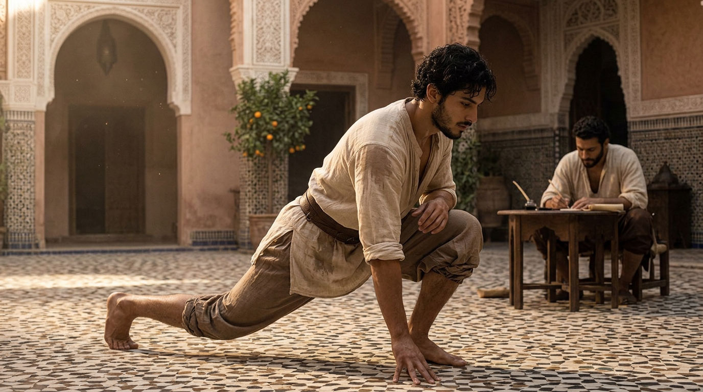

Brotherhood & uprightness
Friendship, honour, loyalty, chivalry, discipline — what futuwwa transmits through gesture and companionship.

Futuwwa — already presented in the foundations of Dar al-Hiraf — is not only an ideal of professional companionship. It is a way of being a man among other men: bound by honour as much as by gesture, by the given word as much as by the craft learned. Five requirements compose it, and each is found, intact, in the most ancient Arabic poetry and wisdom.
COMPANIONSHIP
Friendship among men

In the traditional Arabo-Islamic world, virile friendship is not a circumstantial bond: it is an alliance that is built and proven, often through shared trial — travel, craft, the workshop.
كَم صَديقٍ عَرَفتُهُ بِصَديقٍ
صارَ أَحظى مِنَ الصَديقِ العَتيقِ
وَرَفيقٍ رافَقتُهُ في طَريقٍ
صارَ بَعدَ الطَريقِ خَيرَ رَفيقِ
« How many friends I have known through a friend, become dearer than an old friend; how many companions accompanied on a path, become, the path finished, the best of companions. »
al-Buḥturī, 9th century
What the poet says is exactly what an apprentice lives at Dar al-Hiraf: the most solid friendship does not precede the common trial, it is born from it. Two men who share the workshop, the table and prayer become brothers not by declaration, but by the time spent side by side.
THE NAME ONE BEARS
Honour (sharaf, ird)

Honour, in the Arab tradition, is not an abstract pride: it is what a man owes to his name, to his word, to those who bear the same name as he. To lose it is not a passing discomfort — it is a wound that nothing repairs as quickly as it was made.
It is this honour that ʿAntarah ibn Shaddād sings in his Muʿallaqa — already cited in Furusiyya: courage in combat has meaning only because it defends a name, a word, a community. At Dar al-Hiraf, this honour is transmitted on a smaller scale but with the same requirement: to keep what one has promised, not to betray the trust of a master, not to dishonour the gesture that has been taught to us.
THE KEPT WORD
Loyalty (wafa)

The wafa (وفاء) — fidelity to the given word, to the commitment taken, to the friend in trial — occupies a central place in classical Arab ethics, to the point that betraying a pact remains, even today in the popular imagination, one of the worst faults a man can commit.
It is no accident that futuwwa binds the apprentice to his master by a promise, not by a contract: wafāʾ assumes that one remains faithful even when no one is checking, even when it costs. It is this same loyalty that Dar al-Hiraf seeks to form — toward the master, toward the brothers of the workshop, toward the word given to a future family.
THE BODY IN THE SERVICE OF HONOUR
Chivalry (furusiyya)

Strength without measure is not chivalry: it is its negation. Arabo-Islamic furūsiyya — developed in detail on its own page — teaches that the trained body must remain in the service of courage and restraint, never of brutality alone.
THE FORM THAT HOLDS IN TIME
Discipline

Nothing of what precedes — friendship, honour, loyalty, chivalry — is maintained without discipline: the patient repetition of the gesture, the renunciation of ease, the acceptance of a rhythm one has not chosen oneself. It is the thread that links all the disciplines of Music & chant and of Furūsiyya to the daily life of the house.
« What is not transmitted is lost; what is lost must be reconquered, with more pain than it would have cost to keep it. »
WHY THIS MATTERS TODAY
A formation, not a nostalgia

What Dar al-Hiraf transmits is not a cultural décor: it is a backbone.
Many young men grow up today without ever having received, in a coherent way, what friendship, honour, loyalty and discipline concretely require of them. The world around them changes its landmarks faster than it can transmit them — crafts are lost for lack of hands to receive them, as our Vision & mission already recalls.
Dar al-Hiraf does not claim to offer a refuge against the world. It offers something else: a place where a young man learns, through the repeated gesture and the company of masters and brothers, what it means to keep a word, to bear an honour, to remain faithful over time. This foundation does not oppose anything — it precedes everything else. A man who knows what he carries can then face any world without dissolving into it.
This is what parents who entrust a son to us come looking for: not an ideology, but foundations. A man formed here does not return armed against anyone — he returns capable of holding, of transmitting, and of founding in his turn what others before him have held.
ENTERING FUTUWWA
This formation is transmitted over the course of a stay, a workshop or a residency at Dar al-Hiraf — never by discourse alone.
Write to us →The terms on this page are gathered in the glossary of the house.